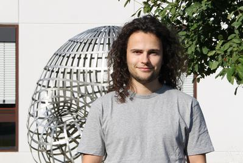

Oliver EdtmairETH Zurich Institute for Theoretical Studies Scheuchzerstrasse 70, 8006 Zurich, Switzerland Email: oliver.edtmair at eth-its.ethz.ch |

Photo: MFO Oberwolfach, CC BY-SA 2.0 DE |
I am a Junior Fellow at the Institute for Theoretical Studies at ETH Zurich mentored by Paul Biran. Before that I was a graduate student at UC Berkeley advised by Michael Hutchings.
My research is in symplectic geometry and dynamics.
This semester I am coorganizing the Symplectic Geometry Seminar and running the course Introduction to Morse theory.
Packing stability and the subleading asymptotics of symplectic Weyl laws
(arXiv)
A universal extension of helicity to topological flows
(with S. Seyfaddini)
(arXiv)
On closed characteristics of minimal action on a convex three-sphere
(with A. Abbondandolo and J. Kang)
(arXiv, video)
Symplectic capacities of domains close to the ball and Banach-Mazur geodesics in the space of contact forms
(with A. Abbondandolo and G. Benedetti)
Duke Math. J. 174, 1567-1646 (2025) (journal, arXiv, video)
Legendrian embedded contact homology
(with J. Chaidez, L. Wang, Y. Yao and Z. Zhao)
(arXiv)
An elementary alternative to PFH spectral invariants
J. Symplectic Geom. 23, 511-574 (2025) (journal, arXiv)
Disk-like surfaces of section and symplectic capacities
Geom. Funct. Anal. 34, 1399-1459 (2024) (journal, arXiv, video)
The Ruelle invariant and convexity in higher dimensions
(with J. Chaidez)
J. Eur. Math. Soc. (JEMS) (2025), published online first (journal, arXiv)
PFH spectral invariants and C-infinity closing lemmas
(with M. Hutchings)
(arXiv, video)
3D convex contact forms and the Ruelle invariant
(with J. Chaidez)
Invent. Math. 229, 243-301 (2022) (journal, arXiv, video)